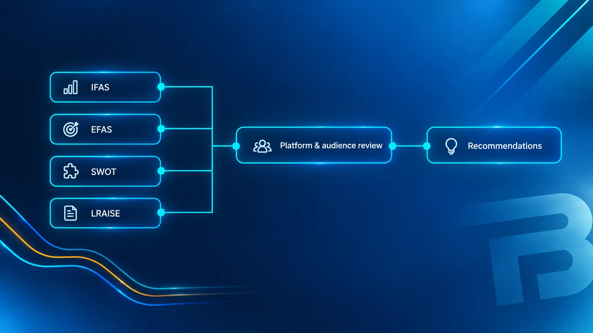

Turning audience and platform research into a practical digital strategy.
The situation
The Great Yarmouth Arts Festival wanted to improve engagement with younger audiences. The research had to account for the continuing effect of post-pandemic social behaviour on attendance and participation, a digital presence that needed a more deliberate, platform-specific approach, the need for sustainable community engagement rather than one-off event promotion, and competition for attention against larger, better-funded organisations.
Research methodology
Rather than jumping to tactics, the work used a structured research framework to understand the organisation's position and the audience landscape:
- Internal Factor Analysis Summary (IFAS) and External Factor Analysis Summary (EFAS).
- SWOT analysis.
- LRAISE framework, leadership, institutional commitment, relevance, atmosphere, internal management, sustainability, efficiency and productivity.
- Review of social-media algorithms, platform integrations and youth-focused engagement practices.
Research methodology
Four frameworks, one practical strategy

Structured frameworks feeding a platform and audience review, then a practical strategy, research before tactics, not instead of them.
Strategic recommendations
The research translated into a set of practical recommendations:
- Increase digital marketing activity with a particular focus on younger audiences.
- Interview local young people about what they would like to see in Great Yarmouth, and use those insights to inform content and programming.
- Create a TikTok presence to reach younger audiences through short-form content.
- Build a CRM capability to maintain an audience base and support youth-driven community initiatives.
- Strengthen organisational structure and volunteer recruitment.
- Streamline community channels so messaging is clearer and more consistent across platforms.
Outcomes & limitations
The research and subsequent marketing efforts supported a more active digital presence for the Great Yarmouth Arts Festival, with event updates and notices published on Facebook and to improve communication with the local community. During this period, the festival’s presence reached a milestone of over 1,500 followers, although the available evidence does not establish how many followers were directly acquired through my work. The audience was predominantly aged 20–30 and above, indicating that reaching younger audiences remained an ongoing challenge. The proposed TikTok initiative did not prove effective due to limitations in its management, while the recommended CRM system was not implemented following the board of directors’ decision that it was unnecessary. Despite these constraints, efforts continued to encourage community initiatives and raise awareness of the festival, although wider organisational support for its growth remained limited.
A further outcome was increased public awareness following the announcement that the festival would not hold an event in 2025, a decision the board considered necessary to support its long-term sustainability. The announcement generated community interest, with public responses reflecting both goodwill towards the festival and concerns about the clarity of its communications. Subsequent discussion indicated that some members of the public felt insufficiently informed about the organisation’s circumstances and future plans. These responses highlighted the importance of transparent stakeholder communication, particularly during periods of organisational uncertainty, while representing individual perceptions rather than definitive evidence of the causes of the festival’s difficulties or the views of the entire community. Overall, the project demonstrated that effective audience development requires more than marketing recommendations alone: it also depends on implementation, organisational commitment, operational capacity and clear communication. The festival’s future remained uncertain, and no conclusions could be drawn about its eventual return.
What this demonstrates
Moving from broad marketing ideas to a structured research framework; connecting audience behaviour with platform strategy; identifying the operational requirements behind marketing (such as CRM and volunteer capacity); and balancing immediate channel tactics with longer-term community-building.
From the festival

Capabilities involved
Need marketing that's grounded in research?
Strategy built on audience and platform evidence, not generic tactics.
Or go straight to the source
- harley@bradfordindependent.com
- I'll get back to you within a day.